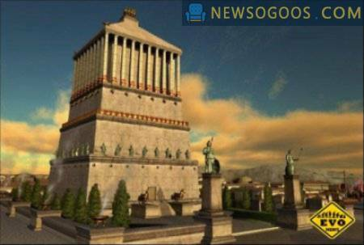

Mauzoleum w Halikarnasie
 Jest to największy grobowiec na świecie, nie licząc piramid. Mauzoleum było przeznaczone dla Mauzoleusa i zostało zbudowane ok. 350 r. p. n. e. Jego wymiary trudno ustalić, ponieważ informacje o nich są sprzeczne. Mauzoleum składało się z podstawy i grobowca otoczonego kolumnami. Na szczycie znajdował się dach w kształcie piramidy. Całość miała ok. 45 metrów. Mauzoleum zostało zniszczone w wyniku zaniedbania i trzęsień ziemi.